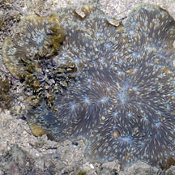
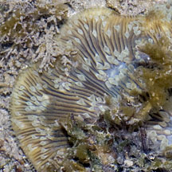
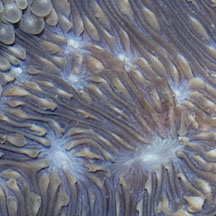
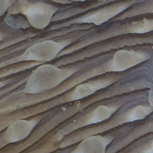
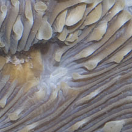
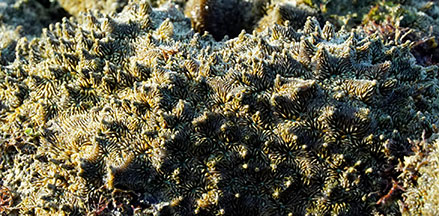
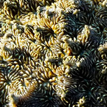
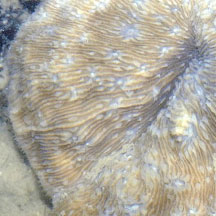

|
|
| hard corals text index | photo index |
| Phylum Cnidaria > Class Anthozoa > Subclass Zoantharia/Hexacorallia > Order Scleractinia > Family Fungiidae |
| Lithophyllon
mushroom coral Lithophyllon undulatum* Family Fungiidae updated Nov 2019 Where seen? This plate-like coral that is stuck to a hard surface is sometimes seen on our Southern shores. Features: Flat plate-like about 20cm in diameter, attached at the base with a stalk but wavy with lobes at the edges. May also be encrusting. The corallites form a distinctive pattern of thick parallel lines perpendicular to the edge. There is a 'waist' in the parallel lines at the mouth of the corallite, i.e., the parallel lines merge at regular intervals. The walls are thick with fine 'teeth'. May be confused with Bracket mushroom coral (Podabacia sp.) which has finer lines with thinner walls. Status and threats: It is listed as globally Near Threatened by the IUCN. |
 Cyrene Reef, Mar 07 |
 |
 |
|
 |
 |
*Species are difficult to positively identify without close examination.
On this website, they are grouped by external features for convenience of display.
| Lithophyllon mushroom corals on Singapore shores |
On wildsingapore
flickr
|
| Other sightings on Singapore shores |
 Tanah Merah Ferry Terminal, Jun 23 |
 Photo shared by Tommy Arden on facebook. |
 |
|
Links
References
|